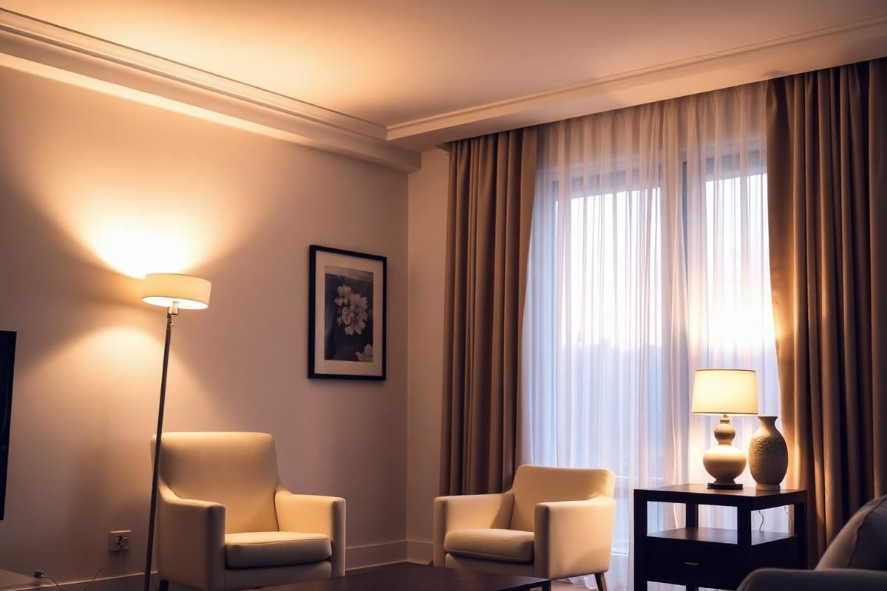

Living Room Lighting Ideas: Layers That Feel Right

Living Room Lighting Ideas: Layers That Feel Right is one of those topics where a little planning goes a long way. In this guide I walk through the process we use in real homes — not just what looks good in a photo, but what actually holds up over time.
Start here
Before you buy or move anything, measure the space and note how you actually use it. The best-looking room is one that matches how you live, so start with the routines: where you sit, where you drop keys, where the light falls in the afternoon.
The essentials
Focus on the pieces that do the most work. Get those right and the rest of the room comes together with much less effort. Aim for materials that patina rather than degrade, and colors you will still like in five years.
- Choose one clear focal point per room.
- Pick materials that improve with age.
- Layer textures instead of adding more colors.
- Leave visual breathing room — negative space is a design element.
Common mistakes
The mistakes we see most often are matching everything too tightly, over-scaling accessories, and skipping proper lighting. Fix those three and most rooms improve overnight.

The Art of Task Lighting: Illuminating Your Activities
Beyond ambient glow, effective task lighting is crucial for specific activities within your living room. This category includes everything from reading lamps to accent lights highlighting artwork. The key is directional illumination without harsh glare. For reading, aim for a light source that's both powerful enough to prevent eye strain and positioned correctly. A good rule of thumb is to have the light source positioned slightly behind and to the side of the reader, illuminating the page directly. A floor lamp with an adjustable arm, like the Anglepoise Original 1227, starting around $300, provides excellent flexibility. For a more subtle approach, consider a swing-arm wall sconce mounted approximately 50-55 inches from the floor, positioning the light cone accurately onto your preferred reading nook. Pay attention to the bulb's color temperature; a warm white (2700K-3000K) is generally more comfortable for extended reading than stark cool white.
For showcasing artwork, a narrow-beam picture light, typically mounted 4-6 inches above the frame, can draw attention effectively. Choose a fixture that matches your frame's aesthetic. Small LED spotlights, recessed into the ceiling about 18 inches from the wall, can also beautifully illuminate a gallery wall without casting distracting shadows from the fixtures themselves. The goal is to make the subject pop, not the light source itself. Consider dimmers for all task lighting to adjust intensity based on mood or time of day, enhancing the overall versatility of your living room's lighting scheme.
Accent Lighting: Creating Mood and Depth
Accent lighting is where your living room truly comes alive, adding layers of visual interest and defining the room's character. Unlike task lighting, its primary purpose is aesthetic, drawing attention to architectural features, decorative objects, or simply creating a warm, inviting atmosphere. Think about what you want to highlight. A beautiful plant on a console table can be subtly backlit by a small puck light or an uplight placed strategically behind it. Similarly, a collection of curated objects on a bookshelf benefits from strip lighting concealed beneath shelves, providing a soft glow that emphasizes their form without being overtly visible. The trick is to light the object, not the space around it.
When selecting fixtures, consider their beam spread and intensity. For artwork, a narrow beam (10-20 degrees) is ideal, while for broader architectural features, a wider flood (40-60 degrees) might be more appropriate. Recessed eyeball lights, priced from $40-$80 each, offer adjustable directionality. Strategically placed table lamps, even if they aren't the primary light source, serve as excellent accent lights, their warm glow defining corners or providing a soft, intimate pool of light for conversation areas. Aim for a mix of heights and light temperatures to create dynamic visual interest; for instance, a tall, sculptural floor lamp paired with a smaller, softer table lamp. Don't underestimate the power of a well-placed dimmer to fine-tune the mood.
Common Fixture Mistakes and Their Fixes
Even with the best intentions, fixture choices can undermine an otherwise well-planned lighting scheme. A common error is using overhead lighting as the sole source. This creates a flat, undesirable illumination often referred to as 'airport lighting.' Instead of a single powerful ceiling fixture, distribute light sources throughout the room, incorporating lamps at various heights. Another pitfall is selecting fixtures that are either too small or too large for the space. A chandelier over a seating area should ideally be about 2/3 the width of your dining table, or if in an open space, refer to the room's dimensions: sum the room's length and width in feet, and that number in inches is a good guideline for the chandelier's diameter. For example, a 15-foot by 20-foot room (35 feet) would suit a 35-inch diameter chandelier.
- Overlooking bulb choice: The fixture is only as good as its bulb. Always consider lumens (brightness), kelvins (color temperature), and CRI (color rendering index) for accurate color representation. A CRI of 80+ is a good starting point.
- Incorrect lamp placement: Table lamps squeezed into small side tables or floor lamps obscuring pathways disrupt flow and comfort. Ensure adequate clearance for both the fixture and its light spread.
- Ignoring the 'weight' of a fixture: A heavy, ornate fixture in a minimalist room feels out of place. Balance visual weight with your room's aesthetic. A delicate glass chandelier in a rustic space can also feel jarring.
- Mis-matching finishes: While not every fixture needs to match perfectly, a cohesive palette of metals (e.g., brushed brass with antique gold, or matte black with oil-rubbed bronze) prevents a disjointed look. Avoid mixing more than two distinct metallic finishes in one room.
Layering for Flexibility and Function
The magic of sophisticated living room lighting lies in its ability to adapt. A truly effective lighting plan isn't static; it's a dynamic interplay of light sources that can be adjusted for any occasion or mood. This means integrating your ambient, task, and accent lighting with thoughtful control. Dimmer switches are your best friend here. Install a dimmer on every single light circuit – ambient, task, and accent – to allow precise control over brightness. Imagine dimming the overhead ambient light to 30%, engaging a reading lamp at 70%, and subtly illuminating artwork with accents at 50% for an intimate evening. This level of control immediately elevates the versatility of your space. Consider smart lighting systems (like Philips Hue or Lutron Caséta) which offer app control, scheduling, and even voice command integration. While an initial investment of $200-$500 for a starter kit, they provide unparalleled convenience and customization.
Think of building scenes within your living room. A 'reading scene' might involve turning on one floor lamp and dimming others. An 'entertaining scene' could activate all accent lighting, a few table lamps, and a low level of ambient light. This layered approach not only enhances comfort but also improves energy efficiency by only using the light needed. Plan your electrical outlets strategically from the outset; having enough outlets at various heights will allow for more flexible lamp placement without relying on unsightly extension cords. Don't be afraid to experiment with different combinations to discover what works best for your specific living habits.
Material and Style Considerations
The materials and styles of your living room lighting fixtures are crucial in reinforcing your overarching design aesthetic. A mid-century modern space will call for different materials and forms than a farmhouse-inspired one. For a contemporary look, consider fixtures crafted from brushed metals like brass or chrome, often paired with clear or frosted glass, or even minimalist fabric shades. A classic space might lean towards carved wood, ornate metals like bronze, and silk or linen shades. Industrial designs often feature exposed bulbs, metal cages, or rough finishes.
Beyond aesthetics, material choices also impact light quality. Fabric shades, particularly those with a tight weave, diffuse light softly, creating a warm, inviting glow. Transparent glass shades, in contrast, allow for brighter, more directed light, while frosted or etched glass softens the output. Metal shades with an opaque interior direct light primarily downwards or upwards, creating distinct pools of light. When selecting a chandelier for instance, ensure its scale is appropriate. For an average 8-foot ceiling, aim for the bottom of the fixture to be at least 7 feet (84 inches) from the floor in walked-under areas, or around 30-36 inches above a coffee table. The material's durability and ease of cleaning are also practical considerations, especially for fixtures in high-traffic areas or those that accumulate dust.
Bulb Basics: A Quick Guide
Choosing the right light bulb is just as critical as selecting the fixture itself. The days of simply screw-in-and-go are over. Today's market offers a dizzying array of options, primarily LED, which are energy-efficient and long-lasting. Look for key specifications: lumens, wattage equivalent, color temperature (Kelvin), and Color Rendering Index (CRI). For living rooms, an ambient light level of 10-20 lumens per square foot is a good starting point. For example, a 200 sq ft living room would need 2000-4000 lumens total.
- Lumens: This measures brightness. Don't focus on wattage, which is power consumption. A 60-watt equivalent LED typically produces around 800 lumens.
- Color Temperature (Kelvin): This dictates the 'warmth' or 'coolness' of the light. 2700K-3000K (warm white) is ideal for living rooms, creating a cozy atmosphere. 3500K-4000K (cool white) is better for task-oriented areas like kitchens or home offices, generally feeling sterile in a living space.
- CRI (Color Rendering Index): Measures how accurately a light source reveals the true colors of objects compared to natural daylight. Aim for a CRI of 80 or higher for good color fidelity. Lower CRI can make colors appear dull or distorted.
- Dimmable: Always confirm if a bulb is dimmable, especially if you plan to use dimmer switches. Many LEDs are dimmable, but not all. Using a non-dimmable bulb with a dimmer can lead to flickering or premature bulb failure.
- Beam Angle: For directional lights (spotlights, accent lights), this indicates how wide the light spreads. A narrow beam (e.g., 25 degrees) creates a focused spotlight, while a wider beam (e.g., 120 degrees) is more flood-like, suitable for general illumination.
Key takeaways
- Match the room to how you actually live.
- Anchor with one main piece and clear lighting.
- Layer textures, not colors.
- Leave breathing room around every object.
Frequently asked questions
Where should I start?
Start with the largest piece and the light. Everything else — art, textiles, small objects — is easier to place once those two anchors are set.
What is a realistic budget?
Prioritize the pieces you touch every day. Spend more on those and less on decorative items, which are easy to swap over time.
How long should this last?
A well-chosen main piece should last 10–15 years. Refreshes come through textiles, art, and accessories, not full replacements.

Sophia Bennett is a certified interior stylist and the senior editor at Styleire. She has spent more than eight years helping homeowners and renters create warm, functional interiors, with hands-on experience across small city apartments and family homes. Her work has been informed by close collaboration with independent designers, craftspeople, and product testers.
View full profile →Related reading

Small Living Room Layout Ideas That Actually Work
The right layout can make a 12x12 living room feel generous. Here is the exact process a stylist uses to plan one, from focal point to rug size.

How to Choose a Sofa: The Complete Buyer's Guide
A good sofa lasts fifteen years. Here is how to make sure the one you buy is one of them.

How to Build a Warm Neutral Color Palette for Your Home
Warm neutrals are the safest and most flattering base for a whole-home palette. Here is how to build one on purpose.